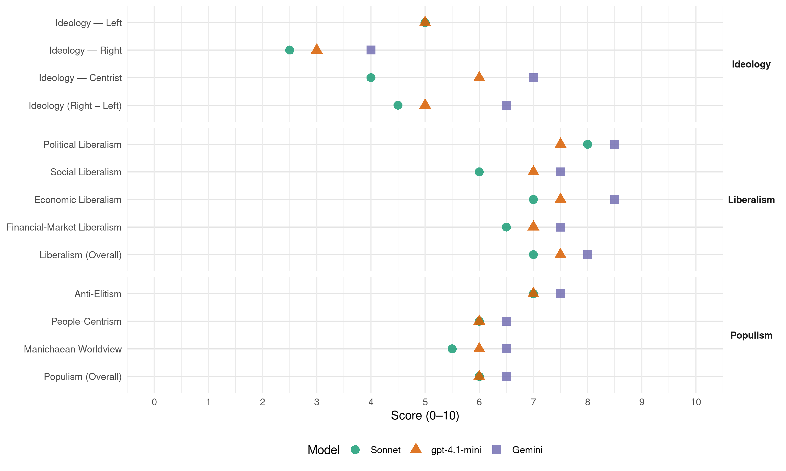

CD (Panama, 2004)
manifesto_id 160630_200405
Get full text: This site shows derived annotations and short verbatim quotes only. The full manifesto text is © Manifesto Project / WZB — obtain it via manifesto-project.wzb.eu using the manifesto_id above.
Headline scores
| Dimension | Sonnet | gpt-4.1-mini | Gemini |
|---|---|---|---|
| Populism (Overall) | 6.0 | 6.0 | 6.5 |
| Anti-Elitism | 7.0 | 7.0 | 7.5 |
| People-Centrism | 6.0 | 6.0 | 6.5 |
| Manichaean Worldview | 5.5 | 6.0 | 6.5 |
| Ideology (Right − Left) | 4.5 | 5.0 | 6.5 |
| Liberalism (Overall) | 7.0 | 7.5 | 8.0 |
| Political Liberalism | 8.0 | 7.5 | 8.5 |
| Social Liberalism | 6.0 | 7.0 | 7.5 |
| Economic Liberalism | 7.0 | 7.5 | 8.5 |
| Financial-Market Liberalism | 6.5 | 7.0 | 7.5 |
Evidence per dimension
Economic Liberalism
Gemini · score 9.0 · verified · chunk 1
“funcionamiento de una economía de libre oferta”
paquete de Políticas Públicas para el funcionamiento de una economía de libre oferta y demanda, con el objeto
Gemini · score 8.0 · verified · chunk 2
“La rigidez que impone el actual Código de Trabajo a los pequeños empresarios”
Miraremos un Código de Más Trabajo para que rija las relaciones laborales de la micro y pequeña empresa. La rigidez que impone el actual Código de Trabajo a los pequeños empresarios evita que estos empresarios
gpt-4.1-mini · score 8.0 · verified · chunk 1
“economía de libre oferta y demanda, con el objeto de estimular la asignación eficiente de los recursos”
…Fomentaremos un coherente e integral paquete de Políticas Públicas para el funcionamiento de una economía de libre oferta y demanda, con el objeto de estimular la asignación eficiente de los recursos y promover un modelo alto y sostenible de crecimiento.
gpt-4.1-mini · score 7.0 · verified · chunk 2
“promoveremos un sistema tributario que elimine los subsidios exoneraciones y otros privilegios fiscales”
Propuestas: Crearemos un sistema tributario que elimine los subsidios exoneraciones y otros privilegios fiscales que provocan rigidez y distorsiones en la economía, e impiden un crecimiento integrado de los diversos sectores. Revisaremos todos los subsidios y exoneraciones otorgados (Por ejemplo, a Panamá Ports y a todas las otras equiparaciones vigentes). Reforzaremos el Sistema de Administración Tributaria con eje en la capacitación, que incluya medidas de reorganización de funciones, de calificación de personal, de incentivos a la eficacia en la recaudación. Reduciremos el impuesto a la gasolina en B0.25 y eliminaremos el impuesto Diésel. Esto significará un sacrificio fiscal superior a los B50 millones, que sustituiremos con la retrotracción del contrato de Panamá Ports Company a su estado original, devolviéndole al Estado entre B25 y B30 por año. El diferencial provendrá de ahorros en los gastos, entre los cuales podemos mencionar la eliminación de todas las botellas en el gobierno y eliminación de gastos de celulares y otros gastos superfluos. Así reduciremos los costos operativos de la pequeña empresa y aumentaremos el poder adquisitivo de los consumidores.
Sonnet · score 7.0 · verified · chunk 1
“libre oferta y demanda”
Fomentaremos un coherente e integral paquete de Políticas Públicas para el funcionamiento de una economía de libre oferta y demanda, con el objeto de estimular la asignación eficiente de los recursos
Sonnet · score 7.0 · verified · chunk 2
“elimine los subsidios exoneraciones y otros privilegios fiscales”
Crearemos un sistema tributario que elimine los subsidios exoneraciones y otros privilegios fiscales que provocan rigidez y distorsiones en la economía
Financial-Market Liberalism
Gemini · score 7.0 · verified · chunk 1
“diversificando el portafolio de activos financieros”
rendimiento de las reservas de la CSS, diversificando el portafolio de activos financieros dentro del marco de un
Gemini · score 8.0 · verified · chunk 2
“fortalecer los instrumentos de regulación”Prudencial” y los procedimientos de verificación”
Impulsaremos medidas para fortalecer los instrumentos de regulación “Prudencial” y los procedimientos de verificación de su cumplimiento con el objetivo de consolidar la estabilidad
gpt-4.1-mini · score 7.0 · verified · chunk 1
“ampliaremos y universalizaremos la red de agua y saneamiento”
…Ampliaremos y universalizaremos la red de agua y saneamiento. Involucraremos a la población en el cuidado de la salud a través de acciones de información y capacitación con el fin de prevenir enfermedades.
gpt-4.1-mini · score 7.0 · verified · chunk 2
“Impulsaremos medidas para fortalecer los instrumentos de regulación”Prudencial”“
Fortaleceremos, en conjunto con el sector privado, el nivel de formación en materia financiera para mejorar la formación del recurso humano. Dotaremos de recursos tendientes a mejorar la operatividad de las instituciones públicas encargadas de supervisar, controlar y fiscalizar a las entidades en las cuales se realicen actividades financieras. Impulsaremos medidas para fortalecer los instrumentos de regulación “Prudencial” y los procedimientos de verificación de su cumplimiento con el objetivo de consolidar la estabilidad que goza el sistema financiero panameño. Incorporaremos en nuestro ordenamiento jurídico las recomendaciones del Comité de Basilea. Se tomarán medidas para prevenir el uso de nuestras instituciones financieras para la transferencia o depósitos de fondos originados en actividades criminales. Impulsaremos a través de la Superintendencia de Bancos la implementación progresiva de un Código de Buen Gobierno para mejorar la eficiencia y transparencia de los Consejos de Administración de las sociedades financieras.
Sonnet · score 6.0 · verified · chunk 1
“mercados financieros internacionales”
condiciones estarán dadas para refinanciar los vencimientos de la deuda bajo mejores términos en los mercados financieros internacionales, lo que facilitará la posibilidad de que la deuda disminuya
Sonnet · score 7.0 · verified · chunk 2
“regulación”Prudencial” y los procedimientos de verificación”
Impulsaremos medidas para fortalecer los instrumentos de regulación “Prudencial” y los procedimientos de verificación de su cumplimiento con el objetivo de consolidar la estabilidad
Political Liberalism
Gemini · score 9.0 · verified · chunk 1
“consagre el Estado de Derecho y la Independencia”
Sentaremos las bases de un régimen verdaderamente democrático donde se consagre el Estado de Derecho y la Independencia de los tres
Gemini · score 8.0 · verified · chunk 2
“garantiza la independencia y autonomía de los poderes del Estado”
está disposición constitucional garantiza la independencia y autonomía de los poderes del Estado. El Órgano Judicial no goza de ninguna independencia
gpt-4.1-mini · score 8.0 · verified · chunk 1
“autenticidad democracia basada en la independencia de los poderes públicos”
…Introduciremos profundas reformas al sistema judicial e institucional con el fin de consolidar la existencia de una auténtica democracia basada en la independencia de los poderes públicos que asegurar el imperio de la justicia y de las leyes.
gpt-4.1-mini · score 7.0 · verified · chunk 2
“todo ciudadano tiene el derecho de revisar las acciones y decisiones de los funcionarios públicos”
La Ley de Transparencia: El arma más efectiva para combatir la corrupción Uno de los primeros actos para atacar la corrupción en el gobierno de Ricardo Martinelli será revocar el Decreto Ejecutivo que regula la Ley de Transparencia. Creemos firmemente que todo ciudadano tiene el derecho de revisar las acciones y decisiones de los funcionarios públicos. Esta reglamentación ha tenido el propósito de evitar que ciudadanos decentes puedan fiscalizar el accionar de nuestros políticos. La transparencia es el principal enemigo del corrupto y por ello devolver la Ley de Transparencia su estado y espíritu original será el núcleo fundamental de nuestro esfuerzo Anticorrupción. Quiénes financian las campañas políticas La experiencia de otros países nos demuestra que los gobiernos transparentes promueven el crecimiento económico y mejora los estándares de vida de sus ciudadanos.
Sonnet · score 8.0 · verified · chunk 1
“consagre el Estado de Derecho y la Independencia de los tres poderes”
Sentaremos las bases de un régimen verdaderamente democrático donde se consagre el Estado de Derecho y la Independencia de los tres poderes del Estado
Sonnet · score 8.0 · verified · chunk 2
“eliminación de las leyes mordaza”
Libertad de prensa: eliminación de las leyes mordaza El flagelo de la corrupción es fuerte y debe ser atacado desde varios frentes.
Liberalism (Overall)
Gemini · score 8.0 · verified · chunk 1
“funcionamiento de una economía de libre oferta”
paquete de Políticas Públicas para el funcionamiento de una economía de libre oferta y demanda, con el objeto
Gemini · score 8.0 · verified · chunk 2
“garantiza la independencia y autonomía de los poderes del Estado”
está disposición constitucional garantiza la independencia y autonomía de los poderes del Estado. El Órgano Judicial no goza de ninguna independencia
gpt-4.1-mini · score 8.0 · verified · chunk 1
“autenticidad democracia basada en la independencia de los poderes públicos”
…Introduciremos profundas reformas al sistema judicial e institucional con el fin de consolidar la existencia de una auténtica democracia basada en la independencia de los poderes públicos que asegurar el imperio de la justicia y de las leyes.
gpt-4.1-mini · score 7.0 · verified · chunk 2
“Impulsaremos medidas para fortalecer los instrumentos de regulación”Prudencial”“
Fortaleceremos, en conjunto con el sector privado, el nivel de formación en materia financiera para mejorar la formación del recurso humano. Dotaremos de recursos tendientes a mejorar la operatividad de las instituciones públicas encargadas de supervisar, controlar y fiscalizar a las entidades en las cuales se realicen actividades financieras. Impulsaremos medidas para fortalecer los instrumentos de regulación “Prudencial” y los procedimientos de verificación de su cumplimiento con el objetivo de consolidar la estabilidad que goza el sistema financiero panameño. Incorporaremos en nuestro ordenamiento jurídico las recomendaciones del Comité de Basilea. Se tomarán medidas para prevenir el uso de nuestras instituciones financieras para la transferencia o depósitos de fondos originados en actividades criminales. Impulsaremos a través de la Superintendencia de Bancos la implementación progresiva de un Código de Buen Gobierno para mejorar la eficiencia y transparencia de los Consejos de Administración de las sociedades financieras.
Sonnet · score 7.0 · verified · chunk 1
“libertad económica e individual que constituyen ingredientes esenciales”
este Plan se basa en el respeto absoluto hacia la libertad económica e individual que constituyen ingredientes esenciales para consolidar nuestro sistema democrático
Sonnet · score 7.0 · verified · chunk 2
“transparencia en la Gestión de la Deuda Pública”
Promover las prácticas de buen gobierno corporativo en el mercado mediante la transparencia en la Gestión de la Deuda Pública.
Anti-Elitism
Gemini · score 8.0 · verified · chunk 1
“corrupción por parte de los políticos tradicionales”
busca dar soluciones a los panameños golpeados de tanta corrupción por parte de los políticos tradicionales. Por más que
Gemini · score 7.0 · verified · chunk 2
“no ha existido una estrategia anticorrupción que permita que los beneficios económicos no sean apropiados por grupos tradicionales de poder”
Esto se debe que no ha existido una estrategia anticorrupción que permita que los beneficios económicos no sean apropiados por grupos tradicionales de poder, esto es de naturaleza económica o política.
gpt-4.1-mini · score 8.0 · verified · chunk 1
“golpeados de tanta corrupción por parte de los políticos tradicionales”
…plataforma ideológica, una plataforma diferente e innovadora que busca dar soluciones a los panameños golpeados de tanta corrupción por parte de los políticos tradicionales. Por más que el panameño lucha, por más que el panameño intenta, no logra salir de la pobreza…
gpt-4.1-mini · score 6.0 · verified · chunk 2
“la corrupción representa un impuesto regresivo que pagan los sectores más vulnerables”
La corrupción: causa principal de la pobreza Ningún plan económico será efectivo si no atacamos simultáneamente el flagelo de la corrupción. La corrupción dificulta la distribución de oportunidades para los más humildes y perpetua la inequidad de ingresos que existe en Panamá. Aunque es cierto que Gobiernos del pasado lograron ciertos avances en materia económica, el resultado siempre ha sido una riqueza mal distribuida. Esto se debe que no ha existido una estrategia anticorrupción que permita que los beneficios económicos no sean apropiados por grupos tradicionales de poder, esto es de naturaleza económica o política. En otras palabras, una buena estrategia económica debe ir acompañado anticorrupción que garantice que los más humildes se benefician de los frutos del crecimiento económico. Solo así crearemos riqueza bien distribuida y reducir hemos la inequidad que tanto daño le hace a los más pobres. Este es el nuevo objetivo principal de nuestra estrategia Anticorrupción: Devolverle a los más humildes las oportunidades que les han sido negadas. La Ley de Transparencia: El arma más efectiva para combatir la corrupción Uno de los primeros actos para atacar la corrupción en el gobierno de Ricardo Martinelli será revocar el Decreto Ejecutivo que regula la Ley de Transparencia. Creemos firmemente que todo ciudadano tiene el derecho de revisar las acciones y decisiones de los funcionarios públicos. Esta reglamentación ha tenido el propósito de evitar que ciudadanos decentes puedan fiscalizar el accionar de nuestros políticos. La transparencia es el principal enemigo del corrupto y por ello devolver la Ley de Transparencia su estado y espíritu original será el núcleo fundamental de nuestro esfuerzo Anticorrupción.
Sonnet · score 8.0 · verified · chunk 1
“la clase política pone sus intereses por encima del de los panameños”
El panameño lucha pero no avanza, porque vivimos en un país donde la clase política pone sus intereses por encima del de los panameños. El futuro existe, pero solo para ellos
Sonnet · score 6.0 · verified · chunk 2
“grupos tradicionales de poder”
los beneficios económicos no sean apropiados por grupos tradicionales de poder, esto es de naturaleza económica o política
Ideology — Centrist
Gemini · score 8.0 · verified · chunk 1
“políticos tradicionales cuyo único legado ha sido”
Panamá ha sido gobernado por políticos tradicionales cuyo único legado ha sido la corrupción, la deuda externa
Gemini · score 6.0 · verified · chunk 2
“evitar depender y ser influenciados por grupos de poder”
Con ello buscamos evitar depender y ser influenciados por grupos de poder que financian simultáneamente diferentes campañas políticas
gpt-4.1-mini · score 7.0 · verified · chunk 1
“nuestra plataforma ideológica deja claro que somos el partido de las propuestas”
…Esta plataforma de propuestas es diferente a las soluciones fracasadas de los políticos tradicionales. Nuestra plataforma ideológica deja claro que somos el partido de las propuestas, donde defendemos los principios fundamentales de la libertad…
gpt-4.1-mini · score 5.0 · verified · chunk 2
“una buena estrategia económica debe ir acompañado anticorrupción”
En otras palabras, una buena estrategia económica debe ir acompañado anticorrupción que garantice que los más humildes se benefician de los frutos del crecimiento económico. Solo así crearemos riqueza bien distribuida y reducir hemos la inequidad que tanto daño le hace a los más pobres. Este es el nuevo objetivo principal de nuestra estrategia Anticorrupción: Devolverle a los más humildes las oportunidades que les han sido negadas.
Sonnet · score 4.0 · verified · chunk 1
“una nueva agenda, sino también una nueva visión”
Nuestras propuestas sólo ofrecen una nueva agenda, sino también una nueva visión – un país en donde cada panameño ocupe un lugar importante, sin privilegios ni prebendas para nadie
Sonnet · score 4.0 · verified · chunk 2
“alianza o concertación entre Gobierno, trabajadores y empresarios”
Estimularemos una alianza o concertación entre Gobierno, trabajadores y empresarios a objeto de que -sin desproteger derechos fundamentales de los trabajadores-
Ideology — Left
gpt-4.1-mini · score 6.0 · verified · chunk 1
“redistribución de la riqueza y una reducción de la pobreza”
…Introduciremos un mayor crecimiento económico sostenible, lo cual pavimentará el camino para una verdadera redistribución de la riqueza y una reducción de la pobreza. Instrumentaremos una política de complementariedad entre el Estado y el mercado…
gpt-4.1-mini · score 4.0 · verified · chunk 2
“redistribución ilegal de recursos”
Utilizando como vehículo el poder público, la corrupción facilita la redistribución ilegal de recursos, de aquellos ciudadanos que no tienen poder- ya sea político o económico- hacia aquellos sujetos que si lo tienen. Perjudica a los más pobres, pues los humildes no tienen recursos para comprar la conciencia de los funcionarios corruptos. Cómo tal, la corrupción representa un impuesto regresivo que pagan los sectores más vulnerables de nuestra sociedad, y por ello representa la principal causa de la pobreza e inequidad que existe en Panamá.
Sonnet · score 6.0 · verified · chunk 1
“redistribución de la riqueza y una reducción de la pobreza”
Introduciremos un mayor crecimiento económico sostenible, lo cual pavimentará el camino para una verdadera redistribución de la riqueza y una reducción de la pobreza
Sonnet · score 4.0 · verified · chunk 2
“reducir las desigualdades sociales y regionales”
distribuir los beneficios del crecimiento de manera justa y equilibrada y reducir las desigualdades sociales y regionales por medio de la diversificación
Ideology (Right − Left)
Gemini · score 8.0 · verified · chunk 1
“políticos tradicionales cuyo único legado ha sido”
Panamá ha sido gobernado por políticos tradicionales cuyo único legado ha sido la corrupción, la deuda externa
Gemini · score 5.0 · verified · chunk 2
“evitar depender y ser influenciados por grupos de poder”
Con ello buscamos evitar depender y ser influenciados por grupos de poder que financian simultáneamente diferentes campañas políticas
gpt-4.1-mini · score 6.0 · verified · chunk 1
“nuestra plataforma ideológica deja claro que somos el partido de las propuestas”
…Esta plataforma de propuestas es diferente a las soluciones fracasadas de los políticos tradicionales. Nuestra plataforma ideológica deja claro que somos el partido de las propuestas, donde defendemos los principios fundamentales de la libertad…
gpt-4.1-mini · score 4.0 · verified · chunk 2
“la corrupción representa un impuesto regresivo que pagan los sectores más vulnerables”
La corrupción: causa principal de la pobreza Ningún plan económico será efectivo si no atacamos simultáneamente el flagelo de la corrupción. La corrupción dificulta la distribución de oportunidades para los más humildes y perpetua la inequidad de ingresos que existe en Panamá. Aunque es cierto que Gobiernos del pasado lograron ciertos avances en materia económica, el resultado siempre ha sido una riqueza mal distribuida. Esto se debe que no ha existido una estrategia anticorrupción que permita que los beneficios económicos no sean apropiados por grupos tradicionales de poder, esto es de naturaleza económica o política. En otras palabras, una buena estrategia económica debe ir acompañado anticorrupción que garantice que los más humildes se benefician de los frutos del crecimiento económico. Solo así crearemos riqueza bien distribuida y reducir hemos la inequidad que tanto daño le hace a los más pobres. Este es el nuevo objetivo principal de nuestra estrategia Anticorrupción: Devolverle a los más humildes las oportunidades que les han sido negadas. La Ley de Transparencia: El arma más efectiva para combatir la corrupción Uno de los primeros actos para atacar la corrupción en el gobierno de Ricardo Martinelli será revocar el Decreto Ejecutivo que regula la Ley de Transparencia. Creemos firmemente que todo ciudadano tiene el derecho de revisar las acciones y decisiones de los funcionarios públicos. Esta reglamentación ha tenido el propósito de evitar que ciudadanos decentes puedan fiscalizar el accionar de nuestros políticos. La transparencia es el principal enemigo del corrupto y por ello devolver la Ley de Transparencia su estado y espíritu original será el núcleo fundamental de nuestro esfuerzo Anticorrupción.
Sonnet · score 5.0 · verified · chunk 1
“somos el partido de las propuestas”
Nuestra plataforma ideológica deja claro que somos el partido de las propuestas, donde defendemos los principios fundamentales de la libertad, la descentralización del poder
Sonnet · score 4.0 · verified · chunk 2
“los más humildes se benefician de los frutos”
una buena estrategia económica debe ir acompañado anticorrupción que garantice que los más humildes se benefician de los frutos del crecimiento económico.
Ideology — Right
Gemini · score 4.0 · verified · chunk 2
“mantener una postura firme y clara ante la entrada ilegal”
se debe realizar un control permanente de la entrada de extranjeros al país, logrando así mantener una postura firme y clara ante la entrada ilegal de estos en los últimos años.
gpt-4.1-mini · score 3.0 · verified · chunk 1
“Apoyaremos el fortalecimiento de los valores que refuerzan nuestra cultura y mantienen unido a nuestro país: la familia, la fe, la responsabilidad personal”
…Apoyaremos el fortalecimiento de los valores que refuerzan nuestra cultura y mantienen unido a nuestro país: la familia, la fe, la responsabilidad personal y la creencia en la dignidad de cada panameño.
Sonnet · score 2.0 · verified · chunk 1
“Fomentaremos la inmigración de gente competente”
Fomentaremos la inmigración de gente competente y el retiro de inversionistas que vivan en Panamá. Promoveremos la instrucción de idiomas extranjeros
Sonnet · score 3.0 · verified · chunk 2
“control permanente de la entrada de extranjeros”
se debe realizar un control permanente de la entrada de extranjeros al país, logrando así mantener una postura firme y clara ante la entrada ilegal
Manichaean Worldview
Gemini · score 7.0 · verified · chunk 1
“políticos tradicionales que no abandonarán sus prebendas”
Nuestra lucha es difícil, pues nos enfrentamos a políticos tradicionales que no abandonarán sus prebendas y privilegios sin oponer
Gemini · score 6.0 · verified · chunk 2
“perjudica a los más pobres, pues los humildes no tienen recursos para comprar la conciencia de los funcionarios corruptos”
facilita la redistribución ilegal de recursos, de aquellos ciudadanos que no tienen poder- ya sea político o económico- hacia aquellos sujetos que si lo tienen. Perjudica a los más pobres, pues los humildes no tienen recursos para comprar la conciencia de los funcionarios corruptos.
gpt-4.1-mini · score 7.0 · verified · chunk 1
“El futuro existe, pero solo para ellos, y no para los panameños”
…la clase política pone sus intereses por encima del de los panameños. El futuro existe, pero solo para ellos, y no para los panameños. Por 100 años, Panamá ha sido gobernado por políticos tradicionales cuyo único legado ha sido la corrupción…
gpt-4.1-mini · score 5.0 · verified · chunk 2
“funcionarios corruptos se venden por prebendas”
Los funcionarios corruptos se venden por prebendas, relegando el interés de los ciudadanos al interés de particulares. Cuando la corrupción llega a niveles alarmantes, las instituciones públicas se debilitan y son controladas por grupos que se intercambian favores entre sí, utilizando los recursos del Estado para beneficio propio y de sus allegados. Corrupción: causa principal de la pobreza Ningún plan económico será efectivo si no atacamos simultáneamente el flagelo de la corrupción. La corrupción dificulta la distribución de oportunidades para los más humildes y perpetua la inequidad de ingresos que existe en Panamá.
Sonnet · score 6.0 · verified · chunk 1
“políticos tradicionales que no abandonarán sus prebendas”
Nuestra lucha es difícil, pues nos enfrentamos a políticos tradicionales que no abandonarán sus prebendas y privilegios sin oponer férrea resistencia
Sonnet · score 5.0 · verified · chunk 2
“haciendo a los más ricos, más ricos”
hundiéndolos en el hambre y la miseria, privándoles de oportunidades, y haciendo a los más ricos, más ricos, y a los pobres, más pobres.
People-Centrism
Gemini · score 7.0 · verified · chunk 1
“caminar en los zapatos del pueblo”
injustamente abnegadas. Ayúdennos a seguir caminando en los zapatos del pueblo. Principios y fundamentos de
Gemini · score 6.0 · verified · chunk 2
“el poder político emana del pueblo”
dos elementos e intenciones del constituyente: 1. que el poder político emana del pueblo, qué es el pueblo el que escoge
gpt-4.1-mini · score 7.0 · verified · chunk 1
“Ayúdennos a seguir caminando en los zapatos del pueblo”
…a que se unan y apoyen nuestra nueva plataforma política que busca adecentar y brindar a los panameños las oportunidades que les han sido injustamente abnegadas. Ayúdennos a seguir caminando en los zapatos del pueblo.
gpt-4.1-mini · score 5.0 · verified · chunk 2
“los más humildes se benefician de los frutos del crecimiento económico”
En otras palabras, una buena estrategia económica debe ir acompañado anticorrupción que garantice que los más humildes se benefician de los frutos del crecimiento económico. Solo así crearemos riqueza bien distribuida y reducir hemos la inequidad que tanto daño le hace a los más pobres. Este es el nuevo objetivo principal de nuestra estrategia Anticorrupción: Devolverle a los más humildes las oportunidades que les han sido negadas. La Ley de Transparencia: El arma más efectiva para combatir la corrupción Uno de los primeros actos para atacar la corrupción en el gobierno de Ricardo Martinelli será revocar el Decreto Ejecutivo que regula la Ley de Transparencia. Creemos firmemente que todo ciudadano tiene el derecho de revisar las acciones y decisiones de los funcionarios públicos. Esta reglamentación ha tenido el propósito de evitar que ciudadanos decentes puedan fiscalizar el accionar de nuestros políticos. La transparencia es el principal enemigo del corrupto y por ello devolver la Ley de Transparencia su estado y espíritu original será el núcleo fundamental de nuestro esfuerzo Anticorrupción.
Sonnet · score 7.0 · verified · chunk 1
“invitamos a todos los panameños golpeados de tanta corrupción”
Por ello, invitamos a todos los panameños golpeados de tanta corrupción, pobreza y desempleo a que se unan y apoyen nuestra nueva plataforma política
Sonnet · score 5.0 · verified · chunk 2
“Devolverle a los más humildes las oportunidades”
Este es el nuevo objetivo principal de nuestra estrategia Anticorrupción: Devolverle a los más humildes las oportunidades que les han sido negadas.
Populism (Overall)
Gemini · score 7.0 · verified · chunk 1
“corrupción por parte de los políticos tradicionales”
busca dar soluciones a los panameños golpeados de tanta corrupción por parte de los políticos tradicionales. Por más que
Gemini · score 6.0 · verified · chunk 2
“no ha existido una estrategia anticorrupción que permita que los beneficios económicos no sean apropiados por grupos tradicionales de poder”
Esto se debe que no ha existido una estrategia anticorrupción que permita que los beneficios económicos no sean apropiados por grupos tradicionales de poder, esto es de naturaleza económica o política.
gpt-4.1-mini · score 7.0 · verified · chunk 1
“golpeados de tanta corrupción por parte de los políticos tradicionales”
…plataforma ideológica, una plataforma diferente e innovadora que busca dar soluciones a los panameños golpeados de tanta corrupción por parte de los políticos tradicionales. Por más que el panameño lucha…
gpt-4.1-mini · score 5.0 · verified · chunk 2
“la corrupción representa un impuesto regresivo que pagan los sectores más vulnerables”
La corrupción: causa principal de la pobreza Ningún plan económico será efectivo si no atacamos simultáneamente el flagelo de la corrupción. La corrupción dificulta la distribución de oportunidades para los más humildes y perpetua la inequidad de ingresos que existe en Panamá. Aunque es cierto que Gobiernos del pasado lograron ciertos avances en materia económica, el resultado siempre ha sido una riqueza mal distribuida. Esto se debe que no ha existido una estrategia anticorrupción que permita que los beneficios económicos no sean apropiados por grupos tradicionales de poder, esto es de naturaleza económica o política. En otras palabras, una buena estrategia económica debe ir acompañado anticorrupción que garantice que los más humildes se benefician de los frutos del crecimiento económico. Solo así crearemos riqueza bien distribuida y reducir hemos la inequidad que tanto daño le hace a los más pobres. Este es el nuevo objetivo principal de nuestra estrategia Anticorrupción: Devolverle a los más humildes las oportunidades que les han sido negadas. La Ley de Transparencia: El arma más efectiva para combatir la corrupción Uno de los primeros actos para atacar la corrupción en el gobierno de Ricardo Martinelli será revocar el Decreto Ejecutivo que regula la Ley de Transparencia. Creemos firmemente que todo ciudadano tiene el derecho de revisar las acciones y decisiones de los funcionarios públicos. Esta reglamentación ha tenido el propósito de evitar que ciudadanos decentes puedan fiscalizar el accionar de nuestros políticos. La transparencia es el principal enemigo del corrupto y por ello devolver la Ley de Transparencia su estado y espíritu original será el núcleo fundamental de nuestro esfuerzo Anticorrupción.
Sonnet · score 7.0 · verified · chunk 1
“Por 100 años, Panamá ha sido gobernado por políticos tradicionales”
Por 100 años, Panamá ha sido gobernado por políticos tradicionales cuyo único legado ha sido la corrupción, la deuda externa, la dictadura, el desempleo y la pobreza
Sonnet · score 5.0 · verified · chunk 2
“la corrupción representa un impuesto regresivo”
la corrupción representa un impuesto regresivo que pagan los sectores más vulnerables de nuestra sociedad, y por ello representa la principal causa de la pobreza e inequidad
Social Liberalism